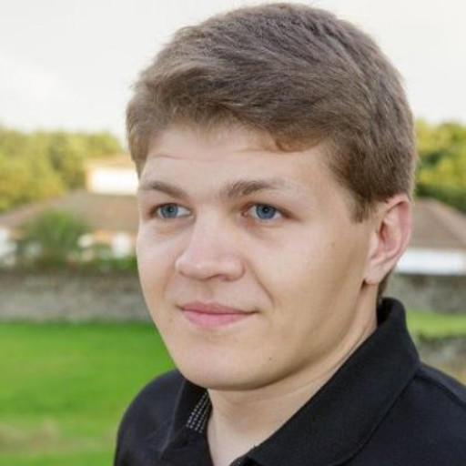

<section id="main_content">
    
    <p>Hey there, I'm a Software Engineer working for four years in IT industry. I have been a developer and
Scrum Master in different paradigms, developing and designing for Desktop, Web as well as Mobile platform which allowed me
        to acquire knowledge about practices in different domains. Feel free to wander around to explore my <a href="/projects.html">work</a>.</p>
</section>
